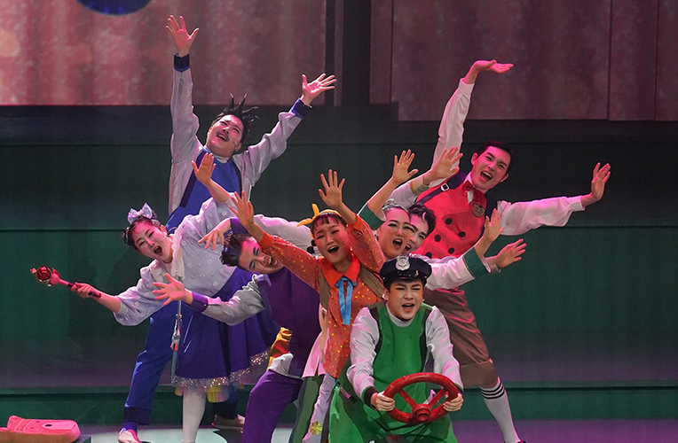
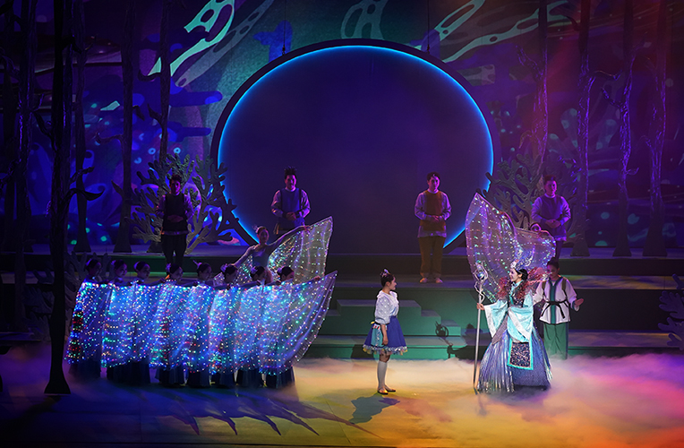

어린이 국악극 <인어공주 황옥>
- 일시
- 8.25.(금) ~ 8.26.(토) 주중 19:30 주말 11:15
- 장소
- 연악당
- 관람료
- 전석 10,000원
- 출연진/연출진
- 국립부산국악원 국악연주단/ 연출 최용석
- 관람연령
- 48개월 이상
부산 바다를 지키기 위한 인어공주 황옥과 친구들의 비밀해적단 모험이 시작된다!
부산 동백섬의 인어상 설화를 배경으로 한 어린이 국악극. 부산의 흰여울마을, 깡깡이마을, 용궁, 파도가 부서지는 바닷가, 산 위에 펼쳐진 언덕과 그 마을들을 잇는 수많은 계단들을 그려낸다. 황옥공주가 흰여울마을 초등학교 학생으로 인간세상에서 친구들과 함께 펼치는 모험에 어린이 여러분을 초대한다.
세부프로그램
제1막 황옥공주의 등장 제2막 흰여울 초등학교 친구들 제3막 거북선 전함, 착한 일을 하는 비밀 해적단 제4막 바다 쓰레기와의 전쟁 제5막 인간을 사랑해서 인간이 된 인어, 황옥공주 에필로그
* 공연내용과 일정은 사정에 따라 변경 될 수 있습니다.

